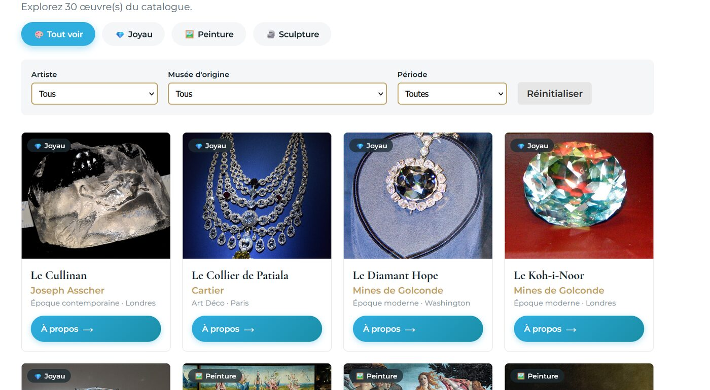
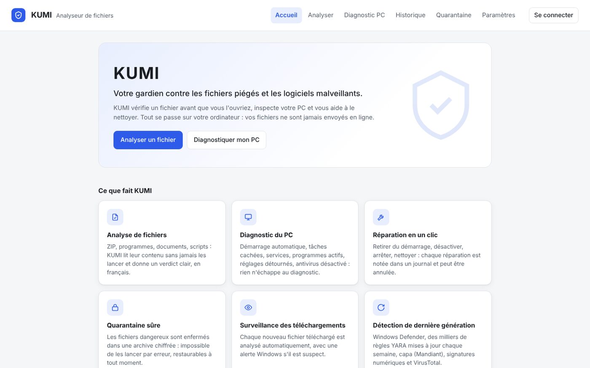
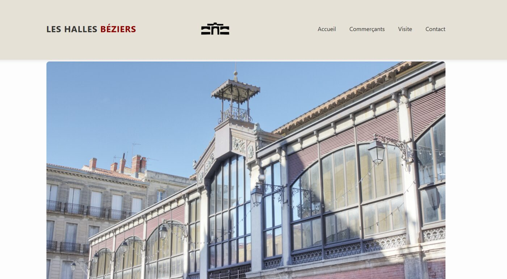
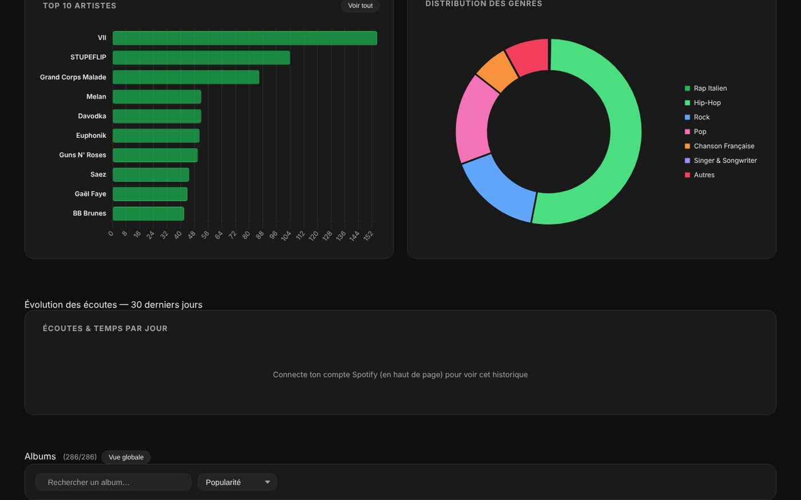

Candidature pour l'alternance business developer & marketing chez Lifmo (Deebr), janvier 2027
Soane Liku ILOAI
Je fais des visuels, des vidéos et des pages web qui donnent envie d'acheter.
Étudiant en BUT Métiers du Multimédia et de l'Internet (bac+3) à l'IUT de Béziers. Je viens de Wallis-et-Futuna, où j'ai fait la communication d'événements jeunesse, des réseaux sociaux jusqu'au porte-à-porte. Je sais écrire, filmer, monter, coder, et je prends en main un nouvel outil tout seul.
Chaque ligne renvoie à une preuve plus bas dans la page.
Prospection
À Wallis, je devais remplir des événements jeunesse : messages sur les réseaux, relances, puis porte-à-porte pour convaincre. Au hackathon de l'entrepreneuriat 2026, j'ai présenté une solution RSE à un vrai client, la cave coopérative des Vignerons du Pays d'Ensérune.
Téléphone et rendez-vous
Le porte-à-porte m'a appris à parler à des inconnus et à encaisser un refus. Le téléphone ne me fait pas peur.
Posts LinkedIn
Community manager pour la MIJ à Wallis-et-Futuna. J'ai aussi conçu une série de templates de posts pour une marque e-commerce, avec l'IA générative.
Articles et newsletter
J'ai rédigé un article d'analyse sur notre publicité BIC : pourquoi une pub peut vendre sans montrer le produit.
Le spot. Une pub de stylo BIC tournée en équipe : une amitié entre deux étudiantes, et le stylo qui n'apparaît qu'aux deux moments où il compte. Le plan produit ci-contre, avec sa mise au point qui glisse sur le stylo, ferme l'histoire.
Le découpage. Pour une deuxième version, « Héritage & Prestige », j'ai écrit le découpage technique complet dans un tableur : 7 scènes, timecodes, cadrage, traitement de l'image et émotion visée à chaque plan.
Plan produit du spot, mise au point sur le stylo
N°
Timecode
Durée
Scène
Caméra
Émotion
01
0:00 – 0:06
6 s
Archives noir et blanc : salle de classe des années 50, gros plan sur une main qui écrit au BIC Cristal.
Macro plongeante, insert sur la bille
Nostalgie
04
0:22 – 0:32
10 s
Scène pivot : le stylo seul sur marbre blanc, éclairé comme au musée.
Zoom avant très lent, axe frontal
Révélation
06
0:42 – 0:52
10 s
Écran partagé : à gauche le monde change, à droite le stylo reste le même. Surimpression « +100 milliards vendus ».
Split-screen vertical
Permanence
07
0:52 – 1:00
8 s
La petite-fille montre son dessin fait au BIC. Logo, puis la signature : « L'essentiel, depuis toujours. »
Face caméra, fondu au blanc
Fierté
02
Une vidéo générée par un script
Motion design : After Effects + JavaScript (ExtendScript), voix off IA ElevenLabs
L'idée. Plutôt que d'animer chaque calque à la main, j'ai écrit un script qui construit tout le projet After Effects : une vidéo de 35 secondes en 1920 × 1080, avec ses scènes, ses textes, ses formes et ses animations.
Pourquoi ça vous parle. C'est la même logique que Lifmo : passer de quelques éléments fixes à une vidéo courte, de façon répétable. La voix off a été générée avec ElevenLabs.
Scène 1, l'accrocheScène 5, les bénéfices pour l'entreprise
Images recréées à partir des textes, couleurs et positions écrits dans le script, sans les illustrations animées.
// R311 - Motion design : le script crée la composition, les scènes et les animationsvar W = 1920, H = 1080, FPS = 30, DUR = 35;
var BLEU = hex("#4169E1"), FONCE = hex("#1F3A9A"), OR = hex("#E6B422");
function fondu(l, t) { keys(tr(l, "ADBE Opacity"), [t, t + 0.5], [0, 100]); }
function glisse(l, t) { var p = tr(l, "ADBE Position"), v = xy(p.value);
keys(p, [t, t + 0.5], [[v[0] - 1300, v[1]], v]); }
function scene(arr, a, b) { for (var i = 0; i < arr.length; i++) { arr[i].inPoint = a; arr[i].outPoint = b; } }
03
Cyber Carnage, du jeu à sa campagne
Jeu en JavaScript (Phaser 3) en binôme, affiche, teaser animé, posts réseaux
Le produit. Un jeu de plateforme rétro codé en binôme en JavaScript avec Phaser 3 : joueur, ennemis, deux cartes.
Le lancement. Une accroche, « Arriverez-vous à sauver le monde ? », déclinée en affiche, en teaser de 33 secondes et en maquettes de posts Instagram et TikTok.
Affiche de lancementTeaser de 33 s en typographie animéeIAMaquettes TikTok et Instagram, GeminiIAStoryboard du spot, plan par plan
Contenu et rédaction
04
Écrire et produire du contenu qui vend
Article, templates de posts, IA générative
L'article. « Un stylo, une amitié : quand BIC fait pleurer sans montrer son produit ». J'y analyse notre spot : ouvrir sur l'émotion, faire du produit un symbole, et laisser le spectateur associer la marque à des valeurs plutôt que lui dire d'acheter.
Les posts. Une série de dix posts et stories pour une marque de compléments alimentaires vendue en ligne, générée et itérée avec ChatGPT : routine, bénéfices, preuve sociale, appel à l'action. Le genre de série que j'aimerais faire pour LinkedIn chez Lifmo.
L'article, page 1IASérie de posts et stories e-commerce, ChatGPT
Développement
05
Je sais aussi ce qu'il y a derrière une page web
Utile pour parler aux équipes e-commerce, comprendre un A/B test ou lire une fiche produit

Musée du FABI
PHP, MySQL (PDO), JavaScript
Site dynamique avec billetterie et tarifs calculés automatiquement, collections filtrables, espace membre, likes et commentaires, et tableau de bord pour l'administrateur. Base relationnelle de 9 tables.

KUMI
Python, HTML/JS, Supabase
Un outil qui vérifie si un fichier est dangereux avant de l'ouvrir : antivirus Windows, règles de détection, réputation en ligne, quarantaine. Projet personnel, appris et construit seul.

Les Halles de Béziers
HTML, CSS, JavaScript, A-Frame
Site vitrine de 4 pages pour mettre en avant les commerçants, avec une visite virtuelle à 360°.

Spoti'Stat
JavaScript, API Spotify, Vercel
Un tableau de bord d'écoutes musicales : morceaux, artistes, genres, évolution sur 30 jours. Connexion au compte Spotify, données synchronisées et appli déployée sur Vercel. Projet personnel, conçu et codé seul.
Site WordPress pour une coach
WordPress, conception centrée utilisateur
Site vitrine pour une commanditaire en orientation : accompagnements, services et prise de contact.
Création visuelle
06
Identités, affiches et chartes
Illustrator, Photoshop, InDesign
Ocean Dishes. L'identité complète d'un restaurant de la mer, en solo : logo, palette, typographie, moodboard et goodies.
Et aussi. L'affiche d'une soirée karaoké pour un bar, la charte graphique d'une appli (en équipe de trois) et un logo pour Wallis-et-Futuna.
Ocean Dishes, planche d'identitéOcean Dishes, moodboardAffiche de soirée, L'ApérouCharte Aura Safe, en équipeLogo Wallis-et-Futuna